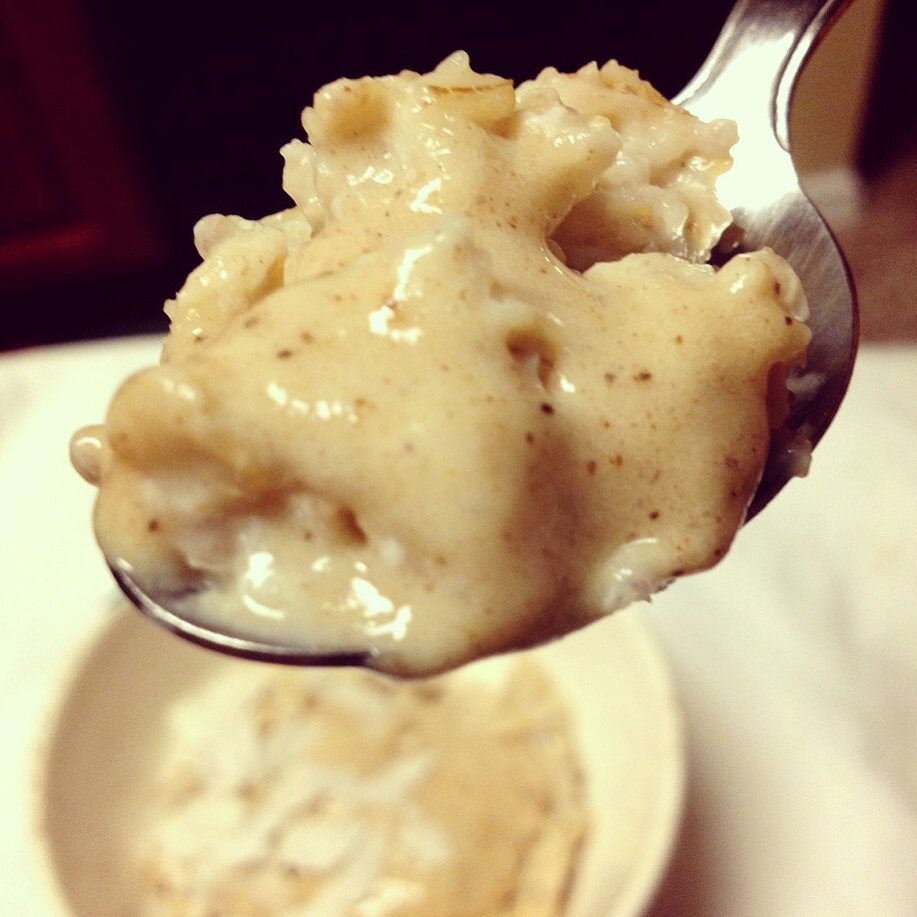

Peach Egg White Oats (with a chai spice protein sauce)
I received some samples of this drink called Sneaky Pete's Oat Drink the other day to try. It's all natural and one of the ingredients is oats to add fiber, hence the name; but, when I first saw it I think that it was a drink to put IN oatmeal! So I thought what the heck, I'll go for it! It did add flavor to the oats but I wouldn't really drink the drink itself.. It does add some cane juice (aka sugar); I like regular ol' water too much :p I gave the rest of the samples to my boyfriend because he generally drinks water but every now and again just needs "something else" as he says, haha. He usually goes for coke or beer, so I figure the Sneaky Pete's is a better alternative to those when he needs a different flavor. Anyways. Back to the oats.
These were egg white oats - I sometimes add in egg whites to plump up the bowl for more volume as well as add protein. Mmmnomnom.

Peach Egg White Oats (with a chai spice protein sauce)Serves: 1Oats- 1/2 cup raw old fashioned oats
- 3/4 cup Peach Sneaky Pete's Oat Drink
- 1 tsp chia seeds
- 1 stevia packet
- 1 egg white
Chai Spice Protein Sauce
- 1/2 scoop vanilla whey protein
- 2 TBSP unsweetened almond milk
- 1/8 tsp cardamom
- 1/8 tsp cloves
- 1/8 tsp ginger
- dash of cinnamon
- 1 stevia packet
For the oatmeal, mix the oats, peach drink, chia seeds, and stevia packet. Microwave for 2 minutes. Then add in the egg white and stir welllll! If you don't, the egg will start to clump. Then microwave in 30 second intervals, stirring well every 30 seconds in order to prevent the oats from clumping. It will take 1-1.5 minutes of microwaving after you've added the egg white. Make the protein sauce by mixing the listed ingredients then pour on top! Enjoy!